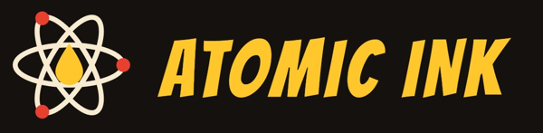
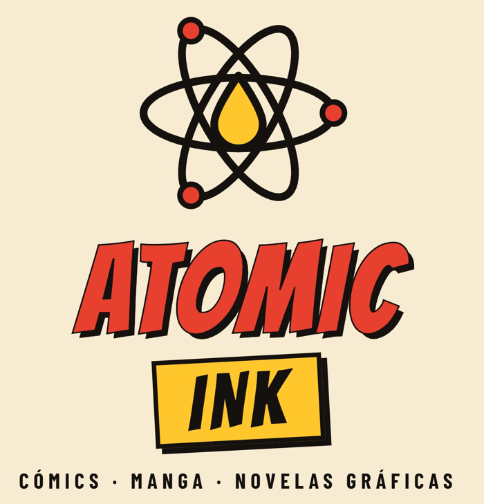

Misión
Ofrecer un catálogo variado de historias ilustradas con una experiencia de compra sencilla, confiable y cercana a la comunidad lectora.

Atomic Ink es una tienda en línea de cómics, manga y novelas gráficas creada para acercar la lectura ilustrada a nuevas audiencias y a coleccionistas.
Ofrecer un catálogo variado de historias ilustradas con una experiencia de compra sencilla, confiable y cercana a la comunidad lectora.
Ser una tienda de referencia en cómics y manga en línea, reconocida por su comunidad en redes sociales y por su servicio.
Usamos rojo, amarillo, tinta y papel para recordar las páginas de un cómic impreso, y un símbolo de átomo con una gota de tinta.
